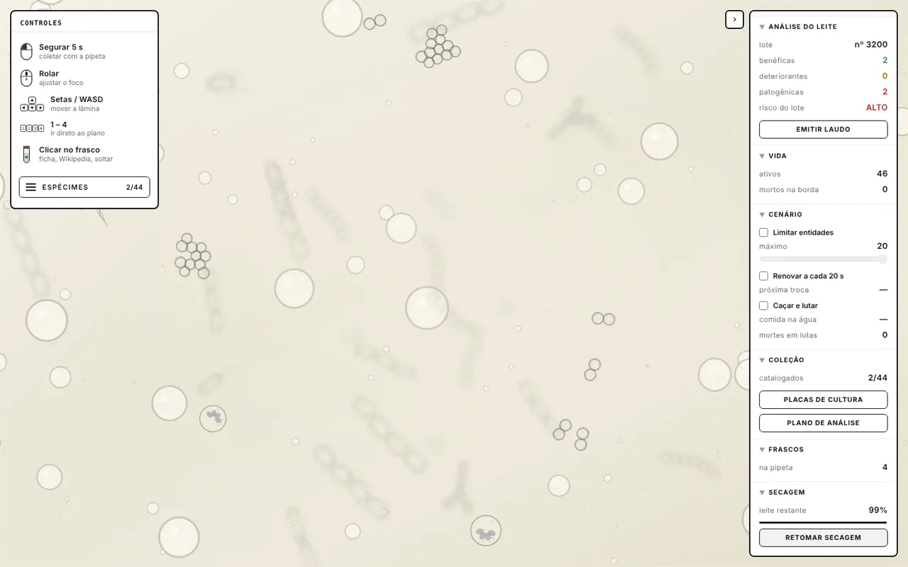
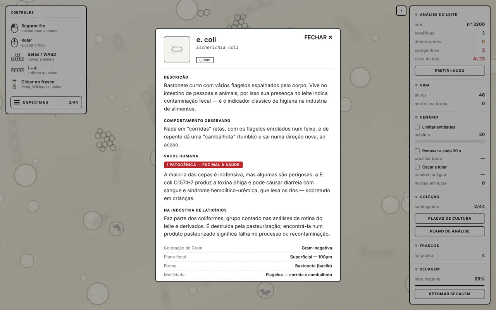

▲ Sintoma · o que a fábrica vê
O problema já aconteceu.
- Lotes reprovados na recepção
- Leite que estraga antes da validade
- Casos de intoxicação alimentar
Microcosmo
01 / 06
role para baixo ↓
ou espaço · setas · passador de slides
Toda gota de leite carrega vida
que o olho não vê.
Um microscópio digital que vê o invisível no leite, antes que ele chegue à mesa.
(01) norma e setor
Segurança e saúde de quem trabalha exposto a agentes biológicos. No nosso caso: o técnico que analisa o leite cru que chega à fábrica.
(01) a equipe
Turma ·
(01)
(03)
(04)
(05) a origem da ideia
Um microscópio virtual de água e solo virou ferramenta de indústria. No leite cru, bactérias que fazem bem e bactérias que adoecem pessoas e animais dividem a mesma gota — e ninguém enxerga nenhuma delas.
▲ Sintoma · o que a fábrica vê
● Causa-raiz · o que ninguém vê
(06) os números do risco
limite de bactérias no leite cru refrigerado (IN 76/2018 · MAPA)
limite de células somáticas; acima disso, sinal de mastite no rebanho
até sair o resultado de uma contagem tradicional em placa
Brucella e M. bovis: zoonoses que podem infectar quem manipula a amostra
(03) o processo de engenharia
Separamos o que o software resolve do que continua sendo trabalho físico no laboratório, e transformamos a norma em regra de sistema.
(03.1) fronteira do sistema
O escopo: o que fica no software (IN) e o que segue como processo físico (OUT).
(03.2) atores e requisitos
(03.3) regras de negócio da NR-32
Patógeno detectado → risco alto: o lote não é liberado cru.
Agente classe 3 (Brucella, M. bovis) → alerta de biossegurança e notificação.
A análise só começa com o EPI confirmado.
Amostra com patógeno é descartada como resíduo biológico.
(03.4) qualidade · requisitos não funcionais
Classificação na hora e laudo em segundos.
Cada microrganismo com ficha científica e fonte.
Roda no navegador, sem instalação.
Treino sem contato com patógeno real.
(04) UML · diagrama de casos de uso
Fronteira do sistema
Tudo dentro do retângulo é o software Microcosmo. O que fica fora é processo físico ou órgão externo.
Atores
O técnico opera o sistema; o supervisor decide sobre o lote; o SIF fica fora da fronteira e só recebe a notificação.
Casos de uso
Oito funções que saem direto dos requisitos, do registro do lote até a decisão.
«include» · sempre acontece
Analisar a amostra sempre inclui identificar o microrganismo, que sempre inclui classificar o risco à saúde.
«extend» · só em condição
Notificar zoonose estende o laudo apenas quando aparecem Brucella ou M. bovis. Isolar em placa é opcional na análise.
(05) a aplicação prática
No chão de fábrica: o leite chega, o técnico coloca a amostra na lâmina e o sistema diz, organismo por organismo, o que faz bem e o que faz mal.
(05.1) fluxo de funcionamento
Amostra coletada do caminhão-tanque
Foco em 4 planos, de 100 a 720 µm
A pipeta segura o microrganismo por 5 s
Risco do lote e causa provável: mastite, higiene, refrigeração
Liberar, pasteurizar sob controle ou descartar e notificar
Fermenta o leite e disputa espaço com as bactérias ruins. Ex.: Lactococcus, Lactobacillus.
Azeda, coagula e muda o sabor antes da validade, mesmo na geladeira. Ex.: Pseudomonas.
Adoece pessoas e animais: bloqueia o lote e, se for zoonose, gera notificação. Ex.: E. coli, Brucella, M. bovis.
(05.2) visão da solução
Lâmina, ficha de cada espécie, laudo do lote e placas de cultura: tudo roda no navegador.
▶ Abrir o simulador ↗



(05.3) o valor gerado
O técnico treina no simulador e reconhece Brucella e M. bovis sem tocar em um agente classe 3.
Patógeno no laudo bloqueia o lote e zoonose gera notificação: a NR deixa de depender da memória de alguém.
O risco do lote sai no fim da análise, não dias depois, quando o leite já foi processado.
(06) conclusão · a missão em uma frase ↓
(06) a missão
Obrigado!
Perguntas da banca?
· · · · · Turma
cada frame deste site é código.
Ver o invisível